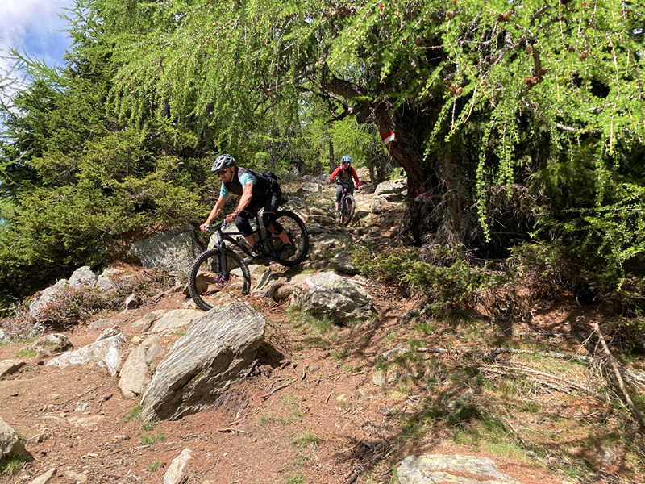

Strada del Sole
Hard Facts
🔴 mittel | ⬌ 2,8 km | ⬊ 420 hm | 🕔 0:30 h
Beschreibung
Die Strada del Sole startet direkt an der Bergstation und bietet auf knapp drei Kilometern Länge mehr als 40 Sprünge, die meist auch umfahren werden können. Freerider finden auf diesem Trail alles, was das Gravity-Herz begehrt.Auf der Strada del Sole ist das Fahrtempo bereits deutlich höher, als auf den blauen Einsteiger-Strecken.
